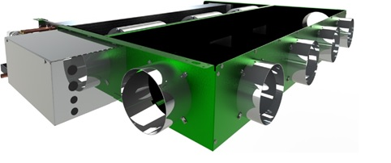

System image

What it is
A fan coil unit (FCU) is a small piece of equipment that serves a single room or a small zone. It has a fan that moves air across a coil, where the coil is cooled/heated by chilled/hot water (common in larger buildings) or sometimes by a DX (refrigerant) coil.
Where you’ll see it
- Hotels, apartments, dorms (room-by-room control)
- Offices with many zones or perimeter loads
- Hospitals/clinics (often in controlled combinations with ventilation)
Main components
Fan
Cooling/heating coil
Condensate drain pan
Valve(s) + actuator
Filter (light duty)
Thermostat / controls
Fan coils typically do not provide the required outdoor air on their own.
DX / Refrigerant-based fan coils (also common)
“Fan coil” usually means a unit with a water coil (chilled/hot water), but you’ll also see DX fan coil units where the coil is fed by refrigerant instead of water. In that setup, the fan coil is basically an indoor unit connected to an outdoor condensing/heat pump unit (or sometimes a VRF system).
- Water FCU: piping is CHW/HW (from a plant like a chiller/boiler or heat pump loop).
- DX FCU: piping is refrigerant lines (like a split system or VRF indoor unit).
- Still important: condensate drainage, filter access, and ventilation design.
How it works
- Thermostat calls for heating or cooling.
- Valve opens to allow hot/chilled water through the coil (or DX system runs).
- Fan pulls room air through filter and coil.
- Air leaves the unit warmer or cooler and mixes in the space.
- If cooling, condensate forms on the coil and drains away.
Pros / Cons
Pros
- Great zoning and comfort control
- Smaller ducts (sometimes none, if it’s a console unit)
- Works well with central ventilation (DOAS)
Cons
- Each unit needs maintenance access
- Condensate management is critical
- Ventilation must be designed separately